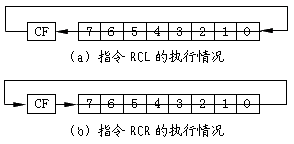

移位指令我们已经学习了4个，逻辑左右移位（SHL/SHR）与循环左右移位（ROL/ROR）。8086/88还有两组移位指令--算术左右移位和带进位标志的循环左右移位：
助记符：SAL/SAR（Shift Arithmetic Left/Shift Arithmetic Right）
用 途：完成向左/向右的算术移位
格 式：SAL/SAR 寄存器，1
SAL/SAR 寄存器，CL
SAL/SAR 存储单元，1
SAL/SAR 存储单元，CL
执 行：SAL执行结果与SHL相同，操作数向左移动指定位数，移出的数位进
入CF标志，同时0由操作数右侧移入；SAR执行时操作数向右移动指
定位数，移出的数位也进入CF标志，同时最高位（符号位）逐渐向
右扩展。
SAR指令主要用于除法运算，每向右移一位就相当于除以2。当然，逻辑右移指令SHL也能当作除法，不过SHL只适用于无符号数除以2，因为从左侧移入的0会使结果总为正数。而SAR指令就能同时适用于带符号数与无符号数的除2运算，因为此指令执行时从操作数左侧移入的不一定是0，而是与操作数的符号一致。
如果将80H向右移一位，采用逻辑移位指令SHR可以得到结果40H，这相当于将128除以2。而采用算术移位指令SAR就能得到结果0C0H，这才是-128除以2的结果。若把0C0H再除以2，则应用SAR指令可以得到结果0E0H，可以看出符号位是逐渐向右扩展的。
SAL指令与SHL指令的操作完全一致，这是因为左移操作是不可能保持符号位不变的。这也提醒我们负数是不能用左移位的方式完成乘2运算的。
指令RCL/RCR与指令ROL/ROR一样用于完成循环移位，不过有一点不同，RCL/RCR可以完成9位、17位的循环移位，而不是普通的8位、16位移位。那么多出的一位从何处而来呢？
助记符：RCL/RCR（Rotate Left/Right through Carry）
用 途：带进位循环左右移位
格 式：RCL/RCR 寄存器，1
RCL/RCR 寄存器，CL
RCL/RCR 存储单元，1
RCL/RCR 存储单元，CL
执 行：指令执行时使操作数向左（右）移动指定位数，移出的位进入CF标
志，同时原CF标志位由操作数右（左）侧进入操作数。

图10-1给出了这两个指令执行的情况，可以看出多出的一位就是CF标志。RCL/RCR指令的用途与ADC/SBB有些相似，前面我们说过ADC/SBB通常用于多位算术，RCL/RCR则通常用于多位移位。比如下面的程序可以将一个64Bit的数向右移动一位：
SHIFT64.ASM
data segment
assume ds:data
number db 88h,77h,66h,55h ；定义一个64Bit的数据
db 44h,33h,22h,11h
data ends
code segment
assume cs:code
main proc far
push ds ；初始化堆栈
xor ax,ax
push ax
mov ax,data ；初始化DS寄存器
mov ds,ax
mov cx,8 ；准备处理8个字节
mov si,offset number+7 ；SI寄存器指向64Bit数据的最高16位
std ；向低地址方向处理数据
loop1:
lodsb ；取得一个字节
call bin8o ；按二进制形式显示
loop loop1
call crlf ；调用CRLF输出回车、换行符
mov cx,8 ；准备8个字节
mov si,offset number+7 ；SI寄存器指向64Bit数据的最高16位
clc ；预先清CF标志，完成逻辑移位
; mov al,byte ptr [si] ；如用这两个指令代替CLC，可完成算术移位
; shl al,1
loop2:
lodsb ；取得一个字节
rcr al,1 ；带进位标志的右循环移位，最低位移入CF
mov byte ptr [si+1],al ；将移位后的数据送回内存
loop loop2 ；返回LOOP2继续处理下一个字节
mov cx,8 ；再次显示移位后的64Bit数据
mov si,offset number+7
loop3:
lodsb
call bin8o
loop loop3
ret ；结束进程
main endp
bin8o proc near ；按二进制形式显示输出字程序
push cx ；保存CX寄存器
mov cx,8 ；显示8个数位
mov bl,al ；将待显示的数据送入BL寄存器
mov ah,0eh ；选择10H中断的0EH功能
loop4:
shl bl,1 ；将待显示数据向左移1位，最高位移入CF
mov al,31h ；准备显示"1"
jc out_chr ；若移出的位为1，转OUT_CHR显示"1"
mov al,30h ；若移出的位为0，准备显示"0"
out_chr:
int 10h ；调用10H中断显示AL寄存器中的字符
loop loop4 ；转LOOP4继续处理下一数位
pop cx ；恢复CX寄存器
ret ；返回主过程
bin8o endp
crlf proc near ；输出回车、换行符的子程序
mov ax,0e0dh ；利用10H中断的0EH功能输出回车符
int 10h
mov al,0ah ；输出换行符
int 10h
ret ；返回主过程
crlf endp
code ends
end main
这段程序所完成的是64位逻辑右移，所用的一点技巧就是在处理第一个字节之前先用CLC指令将CF标志清零，这使得移位后最左端的数位是0，而不是什么未知的结果。如果想完成64位算术移位也很简单，可以考虑在处理第一个字节之前先把它的符号位送进CF标志就可以了。程序的修改很简单，只要去掉CLC指令改用它下面两条加有"；"的指令即可。